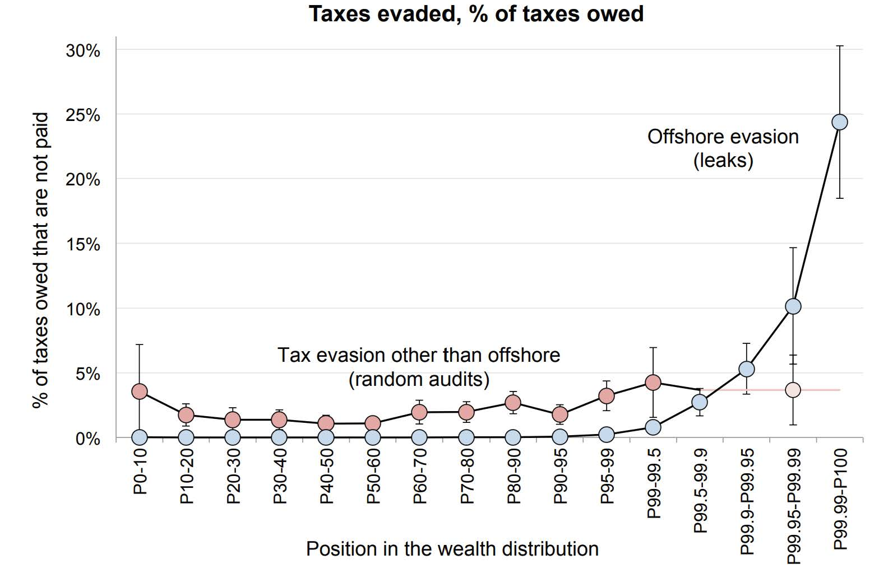
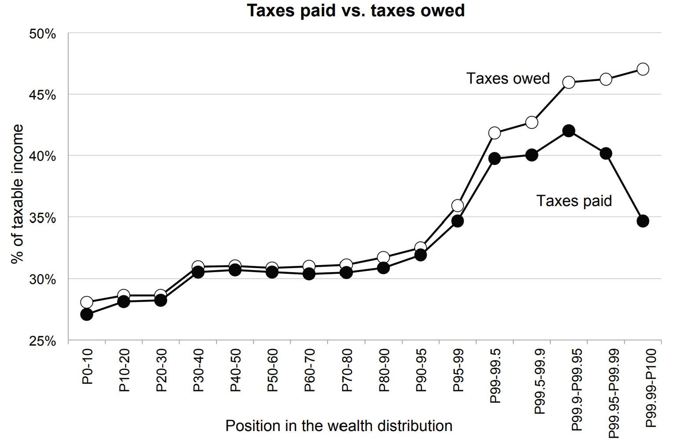
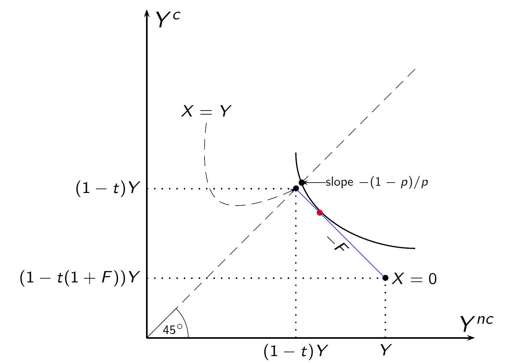
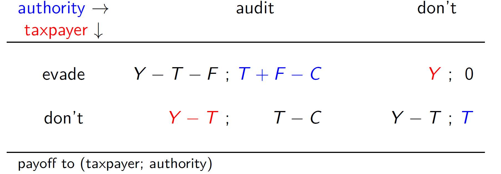
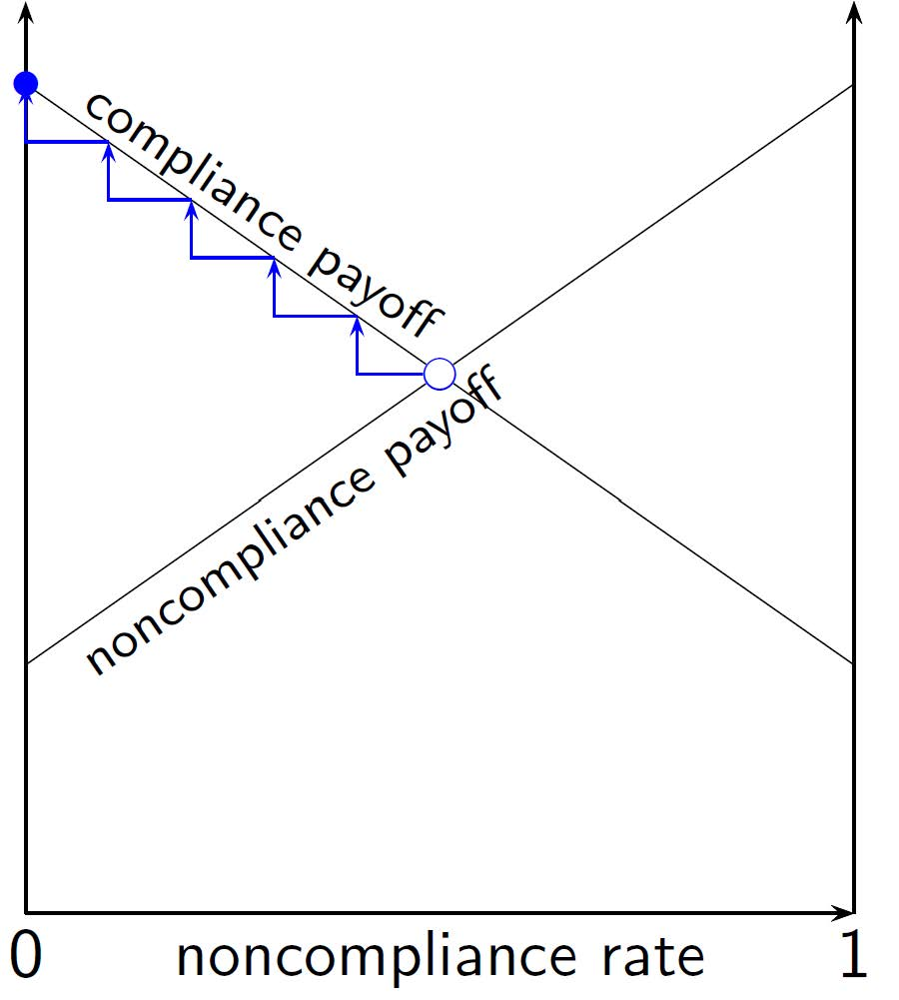
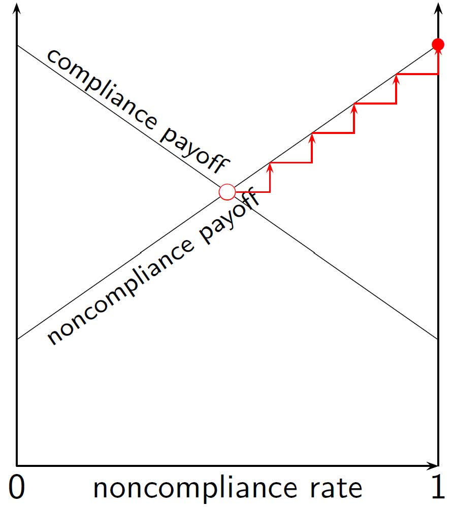

Public Economics
BSc Course
Monday, March 9, 2026
11 Tax Evasion
11.1 Paying and Not Paying Taxes
The Problem
tax avoidance: legally substituting away from taxed activities
tax evasion: illegally not declaring/ paying taxes that are due
gray area in between; link with hidden economy
problem: tax evasion…
affects inequality, redistributes tax burden from evaders to honest tax payers
sucks up resources on part of the evader to hide income (noncompliance costs)
increases resource costs on part of tax office of raising taxes (including detection costs)
limits policy efficacy and powers of the state
may undermine tax morale
corrodes horizontal and vertical equity
destroys neutrality results from tax incidence & efficiency theory (\(\to\) it matters who pays the tax)
Compliance and Evasion
Shades of Gray or Black & White?
honest/dishonest is but one of many dimensions
| compliance: | pay what’s due |
| room for interpretation | |
| negotiation with the IRS | |
| loopholes | |
| non-compliance: | error |
| non-timeliness, sloppiness, negligence | |
| avoidance / tax-planning | |
| evasion |
Tax Evasion: Measurement
internationally: black economy highest in developing countries
but even in OECD countries, may account for 10-30% of GDP
problem: how to measure what is unobserved and unknown?
indirect macro possibilities for measuring
direct input approach: measured outputs v measurable inputs
monetary approach: estimate by extent of cash payments
or through jobs (‘evasive jobs’, often self-employed)
indirect micro approach: compare consumption of self-employed with that of wage earners of the same ‘reported income’
direct micro approach: compare account information from data leaks with individual tax records, or analyse tax paying behavior from tax amnesties
Tax Gap
16% of taxes due is not paid, mainly (14%) unrecoverable (Slemrod, JEP 2007)
| Tax Gap: 2001 Estimates | |
|---|---|
| individual income tax | 18% |
| non-business income | 4% |
| wages and salaries | 1% |
| net capital gains | 12% |
| business income | 43% |
| overreported credits | 26% |
| self-employment tax | 52% |
| corporation income tax | |
| (\(>\) $10m assets) | 14% |
| (\(\le\) $10m assets) | 29% |
Evidence from Tax Leaks and Tax Registers
Alstadsaeter, Johannesen, Zucman (2019, AER)
on average, western (and Nordic) countries do not leave much scope for tax evasion for average workers; there is domestic taxation at source (wages) or third-party reporting (bank account balances)
however, the rich may be different
next to domestic income sources, they may have substantial off-shore activities
AJZ use leaked data from HSBC Switzerland (“Swiss Leaks") and Mossack Fonseca (“Panama Papers"), and match those to individual tax data in Norway, Sweden, and Denmark
estimate how much of tax is paid, and how much should have been paid, across positions in the wealth distribution
document that tax evasion rises sharply with wealth, e.g., the top 0.01% of the Scandinavian wealth distribution evades 25%–30% of its personal taxes (compared to average evasion rate of \(<\)3%)
Tax Evaded as Percentage of Taxes Owed

Tax System Becomes Regressive

Tax Collection and Administration
factors that ease/inhibit tax collection and evasion detection
intransparency, ambiguity and complexity of tax code
multilayered / centrality of gov’t/IRS and returns to scale
computer-guided checking
third-party reports/verification
withholding-at-source
requirement to file taxes
electronic/internet-based filing
prepopulated tax forms etc.
Policy and Enforcement Instruments
extrinsic motivation & incentives for honesty
(costly) audits \(\to\) detection probability
broad-based, random
specific, targeted (oversampling high-income, business income, self-employed)
avg probability of audit \(< 1\%\) (population-wide)
additional collection instruments: levies, liens, outright seizures
threat of punishment
intrinsic motivation & conviction or custom
social norm, civic duty, tax morale, reciprocity or equity concerns
note: extrinsic incentives may crowd out intrinsic motivation
11.2 Modeling Tax Evasion
Modeling Tax Payer’s Evasion
Allingham and Sandmo (1972, JPubE)
maximize expected utility over two states of the world \[\max_{X\in [0,Y]}\text{E} U(X) = \underbrace{(1-p) U(\overbrace{Y-tX}^{Y^{nc}})}_{\text{not~caught}} + \underbrace{p U(\overbrace{(1-t)Y-Ft(Y-X)}^{Y^c})}_{\text{caught}}\]
how much to declare as function of policy parameters: \(X(p,F,t)\)
\(Y\) taxpayer’s actual income \(X\) taxpayer’s declared income \(t\) income tax rate (flat tax) \(p\) probability of being found out cheating \(F\) fine rate imposed on cheaters
State Space Representation
state space: set of states of the world
here: ‘being caught’ or ‘not being caught’
each state of the world is associated with a particular probability that add up to one over all possible states
here: \(p\) and \(1-p\)
treat different elements of state space as distinct ‘goods’
tax-evader’s income depends on detection:
income\(_{\tiny \text{caught}}\) (\(Y^{c}\)), income\(_{\tiny \text{not~caught}}\) (\(Y^{nc}\))tax-evader does not care about being caught as such, but evaluates incomes differently depending on whether caught or not
Preferences in State Space
use indifference curves of expected utility to evaluate state-contingent incomes
uncertain income prospect \(P\)
certain income prospect \(C\) (when not cheating)
risk averse: \(P_1 \succ P\) (mixing in certainty is ‘preferred to’ uncertain prospect)
Slope
suppose, not caught is less likely in \(P_1\) than in \(P\) (or, caught more likely)
\(P\) and \(P_1\) have same \(Y^{c}\), and same utility level
\(P_1\) needs to have higher \(Y^{nc}\) such that \(P_1 \sim C \sim P\)
Curvature
stronger curvature = higher risk aversion (lower risk tolerance)
Evader’s Choice
slope indifference curve: totally differentiate E\(U(X)\) with d\(U=0\): \[\frac{\text{d}Y^{c}}{\text{d}Y^{nc}} = -\frac{(1-p)U'(Y^{nc})}{p U'(Y^{c})} = - \text{MRS}\]
on certainty line (\(Y^{nc}=Y^{c}\)): \(\displaystyle \frac{\text{d}Y^{c}}{\text{d}Y^{nc}} = -\frac{(1-p)}{p}\)
budget constraint
in point \(X=Y\): no evasion, certainty
in point \(X=0\): full evasion, uncertain whether or not caught
slope: \(-F\)
comparison slopes: interior solution (tax evasion) if IC steeper than budget line \[p < \frac{1}{1+F}\]
Complete State Space Diagram

Comparative Statics
choice to evade will depend on policy parameters \(t\), \(p\), \(F\) and income \(Y\)
\(p\uparrow\): indiff’ curve flatter, less likely to evade
\(F\uparrow\): budget line rotates around full reporting point \(X=Y\), less likely to evade
\(Y\uparrow, t\downarrow\): shift budget line outwards;
effect depends on risk aversion; under decreasing absolute risk aversion, tax evasion becomes more likely
perhaps counterintuitive, but note that \(t\uparrow\) increases the fine component of payments, \(tF\)
under CARA, \(t\uparrow\) implies constant amount evaded
Auditing and Punishment
auditor/authority chooses rates of detection \(p\) and fine \(F\)
expected revenue collected \[T = tX + p(1+F)t(Y-X)\]
FOC for choices \[\begin{aligned} \frac{\partial T}{\partial p} &=& (1+F)t(Y-X)+t(1-p-pF)\frac{\partial X}{\partial p} \\ \frac{\partial T}{\partial F} &=& p t(Y-X)+t(1-p-pF) \frac{\partial X}{\partial F} \end{aligned}\]
both are positive if \(pF<1-p\) (i.e., evasion takes place)
increasing \(p\) costs money (effort), increasing \(F\) does not:
‘hanging taxpayers with probability zero’
Discussion
Slemrod (2007, JEP):
extreme policy of almost zero detection probability and almost infinite payment are not observed in practice
high welfare cost of inadvertent mistakes or ‘forgetting to pay’ \(\to\) arbitrary
may require higher standards on the audit process, driving up audit costs
fine rates are often determined by the legislative branch of gov’t, taking into account legal principles
e.g., if punishment is to ‘fit the crime’, fines should be limited
how much tax evasion to tolerate?
rule to follow: equate the marginal social benefit of reduced evasion to the marginal resource cost of auditing
11.3 Strategic Interaction with Tax Auditing
Audit Game
simple matrix game between players taxpayer and authority
\(Y\): income, \(T\): taxes declared/paid
\(C\): audit cost, \(F\): fine imposed; \(C<F\), \(C<T\)

cat-and-mouse game: no Nash equilibrium in (pure) strategies
solution concept: mixed strategies
each player max. exp. payoff by randomizing, i.e., by choosing probabilities \(p_e\) and \(p_a\) associated with pure strategies, given the choice of probability of the other player
i.e., each player plays both pure strategies, but chooses weights with which to play
one way to solve: both players must be indifferent between both their pure strategies, e.g. tax authority indifferent between auditing and not auditing if \[\color{red}{p_e}(T+F-C)+(1-\color{red}{p_e})(T-C) = \color{red}{p_e}\cdot 0 + (1-\color{red}{p_e})T\] or, cost of audit must equal expected revenue gain \[C=\color{red}{p_e}(T+F)\]
similar for taxpayer
probability choices \[\begin{eqnarray*} \color{red}{p_e^\star} &=& C/(T+F)\\ \color{blue}{p_a^\star} &=& T/(T+F) \end{eqnarray*}\]
payoffs \[\begin{eqnarray*} \color{red}{u_e^\star} &=& Y-T\\ \color{blue}{u_a^\star} &=& T(1-C/(T+F)) \end{eqnarray*}\]
Interpretation
- unpaid taxes and fines cancel out for taxpayer
- yet, higher fines \(F\) increase equil. payoff for authority
- higher fines involve Pareto improvement; they decrease deadweight loss from evasion, \(TC/(T+F)\)
Compliance and Social Interaction
what people do in equilibrium might depend on what other people do
vicious circle
tax evasion is felt less bad ‘if everybody’s doing it’
if individual decides to evade, proportion of evaders increases
Multiple Equilibria
payoff from …
…noncompliance: increases in # noncompliers
…compliance: increases in # compliers
policy recommendation to avoid noncompliance equilibrium: ‘short but intense audit policy backed by harsh punishment’
Compliance Equil.

Non-Compliance Eq.

11.4 Conclusions
Summary
(illegal) tax evasion is an important part of reality and often a rational choice
may depend on audit, detection, and punishment possibilities of the state, and on risk aversion of the evader
audit probabilities and fines will discourage evasion
problem for authority: audits are costly, fining is cheap
ambiguous predictions as regards tax rates
one way to achieve full compliance are draconian punishments (keeping low detection work)
absent such drastic deterrence, cat-and-mouse game can unfold, in which both auditors and evaders keep chasing each other in equilibrium
in reality: audit probabilities are low, and fines are not infinite
yet, tax evasion (and avoidance) undermine public finances (tax base erosion) and redistribution efforts

BSc Course • Public Economics • © 2025-26 Stefan Hochguertel